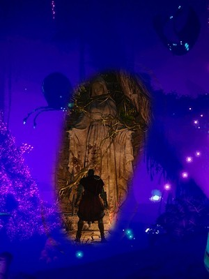

Dark Souls focuses on dungeon exploring and the tension and fear that arise when players encounter enemies in this setting. The game takes place in an open world environment and uses a third-person perspective. The player battles using various weapons and strategies to survive in a dark fantasy world.
I don't actually need any of the dark souls games, I already have the trilogy, I more so just wanted to do this so I could make jokes about getting good at the game. I'm a big fan of the stuff the devlopers make, fromsoftware. For example, my favorite fromsoft game is Bloodborne, the lovecraftian horror spin that is capped at 30 fps. The release of Bloodborne also turned the souls category into soulsborne.